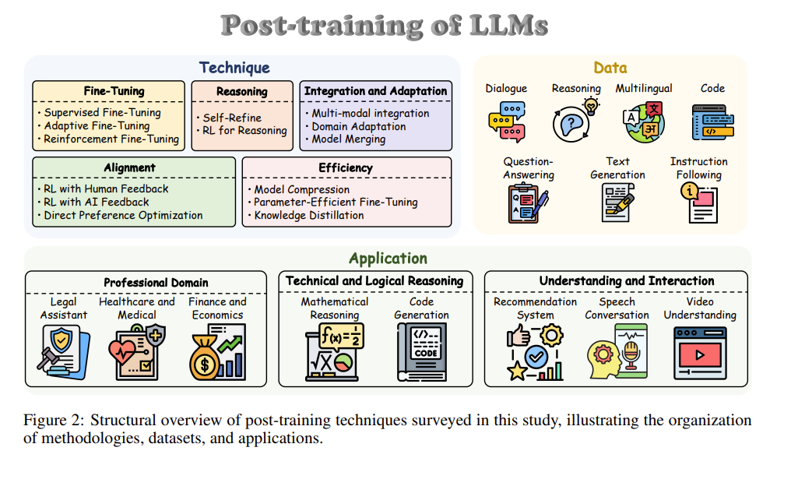
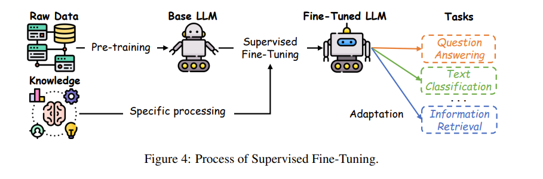
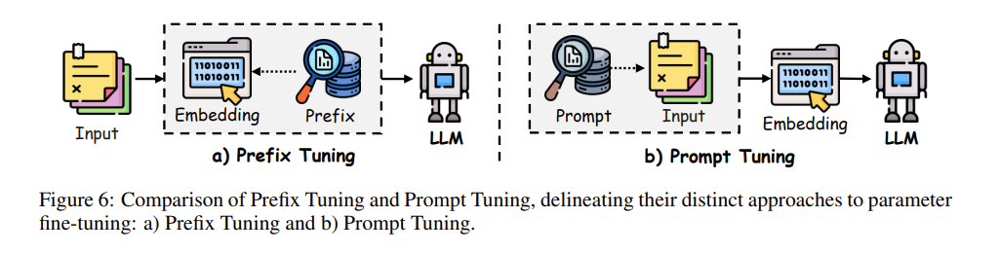
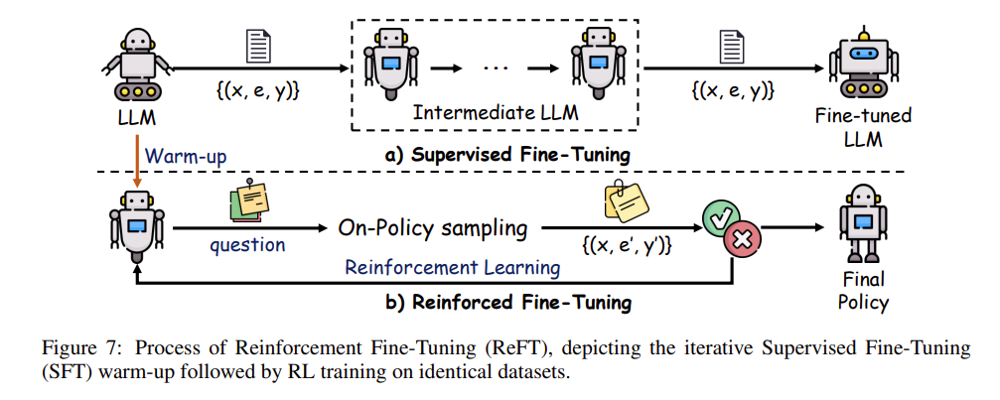
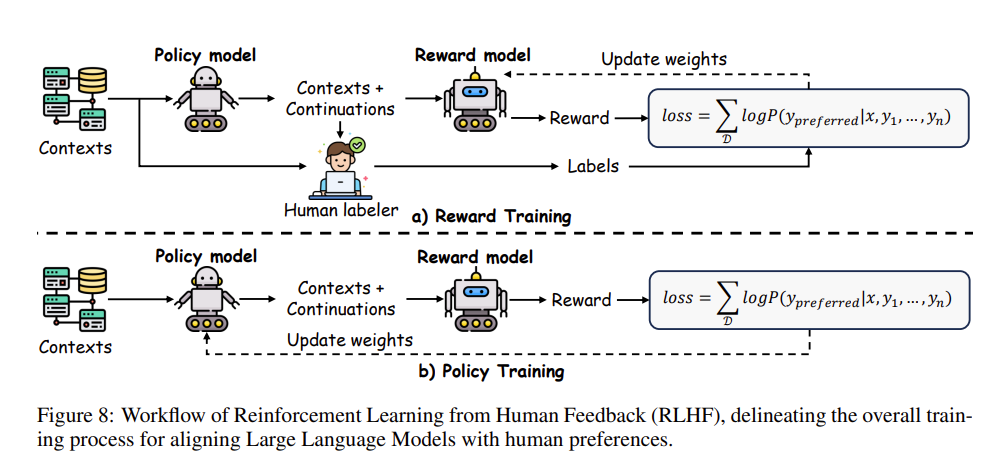

后训练概述
主要参照 该篇论文综述，旨在对于模型后训练有初步的了解。
概要
🔍 一句话核心主旨
“预训练”本质是让模型先在海量无标注文本中“自学”通用语言能力，再通过少量标注数据“特训”适配具体任务；其技术演进经历了从“固定词向量（静态）”到“语境感知向量（动态）”的跨越，最终由BERT确立“预训练+微调”标准范式，催生了现代大模型生态。
📖 逐层拆解与关键概念解析
1️⃣ 概念起源：为何叫“预训练”？
- 源于计算机视觉（CV）的迁移学习。CV中通常先在ImageNet上训练一个能提取通用视觉特征（边缘、纹理、形状等）的模型，再将其权重迁移到医疗影像、目标检测等下游任务。
- NLP领域沿用该思想：“预训练” = 先学通用语言规律（语法、常识、语义关联），“微调” = 针对具体任务调整参数。
2️⃣ 核心优势：打破数据瓶颈
- 传统监督学习依赖人工标注数据，成本高、规模小。
- 预训练的最大突破是可直接利用互联网海量无标注文本（网页、书籍、维基百科等）。无需人工打标签，数据规模呈指数级增长，为模型提供“语言常识库”。
3️⃣ 技术瓶颈：早期“静态”方法的局限
- NNLM、Word2vec 属于静态词嵌入（Static Embeddings）：每个词对应一个固定向量，不随上下文变化。
- 例：
苹果在“吃苹果”和“苹果发布新手机”中向量完全相同。 - 问题：无法处理一词多义、指代消解、长距离依赖等复杂语义，泛化能力弱。
- 例：
4️⃣ 破局方案：从“静态”到“动态”
- 动态预训练（Contextualized Pre-training） 的核心是：词的表示由上下文动态决定。
- BERT 通过引入
Transformer架构 +自注意力机制（Self-Attention），实现双向上下文建模（同时看左右语境），彻底解决静态向量缺陷。 - XLNet 则进一步融合自回归与双向依赖，通过排列语言建模（Permutation LM）提升长文本建模能力。两者共同推动预训练进入“动态语境时代”。
5️⃣ 范式确立与后续生态
- BERT的成功正式确立
Pre-train → Fine-tune（预训练+微调） 标准范式：- 预训练阶段：在大规模语料上通过自监督任务（如掩码预测、下一句预测）学习通用表征。
- 微调阶段：在下游任务（分类、抽取、生成等）上添加简单任务头，用少量标注数据微调。
- 该范式直接启发了后续架构百花齐放：
GPT-2：单向自回归生成路线BART/T5：编码-解码联合路线（兼顾理解与生成）- 最终演进为今天的千亿/万亿参数大语言模型（LLM）。
🧩 技术演进逻辑链（可视化梳理）
CV迁移学习思想
↓
NLP预训练目标：用无标注数据训练通用语言模型
↓
早期静态方法（NNLM/Word2vec）→ 一词一义，缺上下文感知 → 遇瓶颈
↓
动态预训练（BERT/XLNet）+ Transformer自注意力 → 语境动态表征 → 突破局限
↓
确立“预训练+微调”范式
↓
催生 GPT系列 / BART / T5 等 → 奠定现代大模型基础
🧠 后训练（Post-training）是什么？
后训练是指模型完成预训练后，进一步采用一系列技术进行优化与调整，使其更适配具体任务、业务场景和用户偏好。
在 GPT-3（1750亿参数）发布后，后训练方向的研究与工程创新显著加速。实践中，研究者通常结合以下几类方法提升模型可用性与效果：
- 微调（Fine-tuning）：利用标注数据集或任务数据继续训练，调整模型参数，使模型在特定任务上表现更好。
- 对齐策略（Alignment）：通过偏好学习、反馈优化等方式，让模型输出更符合人类价值与用户期望。
- 知识适应（Knowledge Adaptation）：注入或融合领域知识，增强模型在垂直场景中的专业性与准确性。
- 推理改进（Reasoning Enhancement）：通过训练策略和数据构造提升模型的逻辑推理、规划与决策能力。
这类能力增强路径常被统称为后训练语言模型（Post-trained Language Models, PoLMs），并推动了 GPT-4、LLaMA-3、Gemini-2.0、Claude-3.5 等模型能力的持续跃迁。
⚠️ 后训练的现实挑战
尽管后训练显著提升了模型表现，但在不进行重新训练或重大参数调整的前提下，模型对新任务的快速迁移能力仍有限。因此，如何以更低成本获得更强泛化与适配能力，依然是后训练与预训练模型（PTM）研究的核心问题之一。
📈 后训练语言模型（PoLMs）发展历史与关键节点
大型语言模型（LLMs）的演进是自然语言处理（NLP）领域的关键篇章，其中“后训练”（Post-training）方法作为核心催化剂，推动了模型从通用的预训练架构向专用、任务自适应系统的转型。这一发展历程反映了从“建立广泛语言能力”到“增强任务适配、伦理对齐、逻辑推理和多模态融合”的范式转变，其核心发展节点如下：
1. 2018年：预训练革命的破晓
- BERT 与 GPT 的发布重新定义了NLP的基准。BERT的多层双向自编码器架构擅长捕捉强大的上下文依赖（如问答任务）；而GPT的自回归设计确立了连贯文本生成的新标准。它们正式确立了“预训练+微调”（Pre-training and Fine-tuning）的基石模型范式。
2. 2019年：多任务学习的统一
- T5 发布，将各种不同的NLP任务（翻译、摘要、分类等）统一到了一个“文本到文本（Text-to-Text）”的框架下，促进了多任务学习的发展，为后训练的演进确立了坚实的基础。
3. 2020年起：参数高效微调（PEFT）与轻量级适配
- 面向有限数据及计算资源，Prefix-tuning 与 Prompt-tuning 等早期创新提出。这些技术使得模型通过修改输入或调整极少量参数即可实现多任务灵活性，在节省计算资源的同时拓宽了适用范围。
4. 2021年：强化学习与人类对齐的探索
- 引入基于人类反馈的强化学习（RLHF）：利用人类评估结果驱动模型优化输出，使其更符合人类主观偏好，极大增强了模型在真实对话交互场景下的实用价值。
5. 2022年：RLHF的成熟与逻辑推理的涌现
- 近端策略优化（PPO） 算法在RLHF中的成熟应用，提高了对齐优化的稳定性并减少了对噪声反馈的过拟合并。
- 2022年底 ChatGPT 的惊艳亮相完美展示了RLHF的变革潜力，创造了响应迅速且深度符合用户意图的大模型，进而引爆了全行业对PoLMs的研究。
- 同期，思维链（Chain-of-Thought, CoT）提示 策略成为增强模型推理能力的关键手段，鼓励模型分步输出复杂任务的中间步骤，大幅提高了逻辑推断与问题解决域的准确性与透明度。
6. 2022年-2024年：领域自适应、价值观对齐、多模态与架构演进
- 领域自适应：检索增强生成（RAG） 技术崛起，无需重新训练即可融合外部知识库，为需要最新信息的专业应用提供高度语境化的丰富输出。
- 伦理对齐优化：2023年提出的 直接偏好优化（DPO） 极大地简化了RLHF流程，通过跳过奖励建模步骤直接基于人类偏好优化模型，提升了训练效率和鲁棒性。
- 多模态拓展：视觉-语言融合模型如 PaLM-E 和 Flamingo 开创了多模态整合先河，随后 BLIP-2 和 LLaVA 进一步将这些努力拓展至医疗影像等更广泛的领域。
- 架构与计算结构效率：混合专家架构（MoE） 成为前导，其通过动态激活参数的子集，在优化计算效率的同时适应了庞大的参数规模。该范式由 Google 在2022年的 Switch-C Transformer 首创（1.6万亿参数，2048个专家）。随后的迭代如 Mixtral 以及 DeepSeek V2.5（总计2360亿参数，160个专家中激活210亿）进一步精炼了这一框架，证明了稀疏的MoE架构不仅能降低复杂任务的计算开销，还能够在扩展性与效能上媲美密集型（Dense）模型。
- 推理能力跃升：在此期间，结合 自我对弈（Self-play） 强化学习与 基于CoT的蒙特卡洛树搜索（MCTS） 技术，通过模拟迭代推理路径，为重度推理型模型奠定了理论与实践基础。
7. 2025年：从监督微调走向纯强化学习与深度系统推理
- DeepSeek-R1 等现代顶级架构的出现标志着后训练创新的又一里程碑。它打破了传统对监督微调（SFT）的严重依赖，全面拥抱了以思维链（CoT）和探索性强化学习（RL）为主导的策略。
- 典型的如 DeepSeek-R1-Zero，通过整合自我验证（self-verification）、反思（reflection）和超长CoT生成，在一个开放研究范式中证明了RL驱动带来的优越性。此外，该模型利用了知识蒸馏技术（Distillation） 将大型模型中复杂的推理模式转移到规模更小的架构中。这不仅超越了独立RL训练的限制，更确立了一个以推理为中心的可扩展新范式，为后训练方法中长期存在的计算效率与任务适应性挑战提供了极具潜力的解决路径。

🧮 后训练的数学基础：策略优化原理（PPO）
在后训练阶段中，近端策略优化（PPO, Proximal Policy Optimization）算法是基于人类反馈强化学习（RLHF）不可或缺的一环。PPO 的最大特点可以用一个字概括——“稳”。
在微调几千亿参数的大语言模型时，如果每次参数更新的步伐迈得太大，极易导致模型性能发生“灾难性崩溃”（比如突然开始胡言乱语）。PPO 正是通过精妙的数学机制限制了模型每次更新的变化幅度，确保训练过程平稳且可控。
为了通俗地理解它的工作原理，我们需要先梳理几个核心的强化学习概念：
- 状态（State, \(s_t\)）：这代表模型在做决定前看到的“环境局面”。对于大模型来说，这就是它看到的 上下文和用户提示词（Prompt）。
- 动作（Action, \(a_t\)）：模型根据当前状态做出的抉择，可以简单理解为 生成下一个词（Token）。
- 奖励（Reward, \(r_t\)）：系统（环境）对这个动作给出的反馈打分。好动作给高分，差动作给低分或扣分。
- 优势函数（Advantage Function, \(A^\pi(s, a)\)）：这个函数用来衡量“在当前状态 \(s\) 下采取具体动作 \(a\)，比平时的平均表现好多少”。 它的定义公式如下： \(A^\pi(s, a) = Q^\pi(s, a) - V^\pi(s)\) > 其中，\(Q^\pi(s, a)\) 是“采取这个动作后，未来能拿到的预期总分”，而 \(V^\pi(s)\) 就是“在这个状态下，一般情况的平均期望分数”。相减得出的就是“在这个局面下走这步棋的额外收益”。
1. 策略更新（Policy Update）：限制步伐，小步快跑
有了分数和表现评估后，怎么去调整更新模型的参数（策略 \(\pi_\theta\)）呢？PPO 使用了经典的截断目标函数（Clipped Objective Function）来进行增量式的小步更新：
如果觉得公式复杂，没关系，看看这是怎么做到的：
- 比值 \(r_t(\theta)\)：这代表了在更新前后，模型采取同一个动作的概率比值（\(\frac{\pi_\theta(a_t|s_t)}{\pi_{\theta_{old}}(a_t|s_t)}\)）。比值大于1，说明模型现在更倾向于做这个动作；反之亦然。
- 截断机制（Clip 函数）：公式中最核心的就是这个 \(\text{clip}(\dots, 1-\epsilon, 1+\epsilon)\)。它的作用就像是一个“安全阀”。如果比值 \(r_t(\theta)\) 变得太夸张（模型想因为一个很好的奖励而疯狂调整参数），这个函数会强行把变化幅度卡束缚在边界内（由超参数 \(\epsilon\) 控制，比如限制在 0.8 到 1.2 之间）。这样就保证了模型每次只是微调，从而维持训练的极度稳定。
2. 价值函数更新（Value Function Update）：练准鉴赏眼光
要想上面的更新顺利进行，必须要有一个好裁判，即价值函数 \(V_\phi\)。这个价值函数的任务就是去估算处于某个状态时最终能得多少分。为了让估算越来越准确，也会给它设计一个修正公式：
简单说：这个公式就是让模型的预测估算分数 \(V_\phi(s_t)\) 和真实拿到的累计得分 \(R(s_t)\) 之间的误差（均方误差）越小越好。估算越准，也就是“眼光越毒辣”，上方策略更新时的优势函数 \(A^\pi\) 就计算得越精确，形成一个正向循环。
💡 核心一句话总结： PPO 就像一个谨慎的教练，通过“计算比值”并加上“Clip 安全阀限速”，确保大模型在根据人类反馈（RLHF）去调整自身的行为（策略）时，每次只做稳妥的微调，避免步子迈得太大而导致性能崩坏。
🤝 后训练的对齐基石：基于人类反馈的强化学习（RLHF）原理
刚才提到了 PPO 是为了稳定更新，那么更新的目标和规则究竟从何而来呢？这就是基于人类反馈的强化学习（RLHF, Reinforcement Learning with Human Feedback）要解决的问题。
RLHF 是一项让模型“懂事”、与人类偏好对齐的关键机制。它在学习过程中直接引入人类产生的反馈，也就是构建一个能显式捕捉人类喜好的奖励函数（Reward Function），从而让模型更好地适应用户的实际期望和真实世界的应用场景。
为了更清晰地理解它的工作逻辑，我们可以从大模型的根本定义和终极优化目标切入：
1. 大模型生成的本质（定义篇）
我们需要先回归语言模型（用符号 \(\rho\) 表示）的本职工作：它其实就是在给一个词汇库（Vocabulary, \(\Sigma\)）里的词语预测并输出概率分布。
模型 \(\rho\) 生成一段长序列的过程，实际上是基于前面所有已生成的词（从 \(x_0\) 到 \(x_{k-1}\)），来计算下一个词 \(x_k\) 出现的条件概率（Conditional Probability Distriburion）。这个过程串联起来，就形成了最终的回答。用公式表达就是：
通俗理解：大模型的内在机理就是一个依靠算力与规律驱动的“超级文字接龙器”。给定一个前置语境，它通过概率分布猜出下一个最合适的字是什么，一个接一个地吐出（例如文本摘要任务就是根据输入语料接着去续写摘要）。
2. 我们究竟要优化什么？（目标函数篇）
有了这个“文字接龙器”后，如果不加以约束，它只会生成基于原初训练数据上最“高概率”的话，而不是最“讨喜或安全”的话。
在 RLHF 中，我们会把最初的模型 \(\rho\) 拿来作为一个初始策略，我们将优化后的新模型称为策略模型（Policy, \(\pi\)）。 同时，系统中会存在一个类似于“阅卷导师”的奖励函数 \(R(x, y)\)。只要用户给了一个输入/提示词（\(x\)），模型基于输入给出了对应的回答（\(y\)），这位导师就会根据人类的价值标准和倾向，给这对 \((x, y)\) 打出一个分数（一个具体的数值，Scalar value）。
最后，我们的终极目标就是：让大模型通过不断进化这个策略 \(\pi^*\)，使得拿到“预期平均最高分”的概率最大化。 用精炼的目标函数公式表达如下：
公式拆解解析：
- \(x \sim D\)：这代表所有的输入（比如用户的提问）是从真实数据分布 \(D\) 中采集来的。
- \(y \sim \pi(\cdot \mid x)\)：这代表我们得到的回答 \(y\) 完全是基于输入 \(x\) 由现有策略 \(\pi\) 生成的。
- 整个公式也就是在说：我们要找到一个极度聪明的接话策略 \(\pi^*\)，让在任何现实语境下生成的回答，都可以获得最高的评估回报 \(R\)。
💡 核心一句话总结： 如果说原生的大模型是一个只会死记硬背的“文字接龙机器”，RLHF 则是引入一位懂人类喜好的考官（Reward），通过不断地给回答进行评估打分，引导并强迫学生（大语言模型）改变答题套路（Policy \(\pi\)），让它最终在符合人类审美的考场上永远拿到最高的平均分体系。
⚡ 化繁为简的对齐新贵：直接偏好优化（DPO）原理
前面提到的 RLHF 虽然效果显著，但流程十分繁琐：你需要先训练一个专门的“考官”（奖励模型），然后再用强化学习算法（如PPO）去调整模型参数。为了解决这种复杂性，直接偏好优化（DPO, Direct Preference Optimization） 诞生了。
DPO 的核心思想极其霸道：直接丢掉那个独立的“考官”（奖励模型），把人类用“两两比较”（Pairwise Comparisons）选出的偏好，直接塞进大模型的优化过程中。
1. 目标函数（Objective Function）：把奖励藏进策略里
在传统的 RLHF 中，我们希望找到一个能拿到最高分（最大化奖励 \(r\)）的最佳策略 \(\pi_r\)。DPO 证明了一个数学上的等价关系（在带有原始模型偏移惩罚的情况下）：
如果觉得头晕，看看它表达的直白含义：
- \(\pi_{\text{ref}}(y \mid x)\)：这是我们进行后训练前那个“老实巴交的原版模型”（参考策略）。
- \(\exp \left( \frac{1}{\beta} r(x, y) \right)\)：因为人类给了高分奖励 \(r(x, y)\)，所以在这个方向上增加生成的概率（\(\beta\) 是温度系数，控制调整的力度）。
- \(Z(x)\)：是一个让所有概率加起来等于 1 的配平归一化项（配分函数）。
最神奇的地方来了：通过这个公式，我们可以反向把奖励 \(r(x, y)\) 解解出来，用模型的概率去替代它！ 这意味着我们彻底不需要单独去练一个奖励函数了！
2. 偏好模型（Preference Model）：直接在比较中学习
人类的反馈通常是：“针对同样的问题，回答 A（\(y_1\)） 比回答 B（\(y_2\)）更好”。我们用符号表达就是 \(y_1 \succ y_2\)。
DPO 借用了一个叫 Bradley-Terry 的经典比较模型，把上面推导出的关系带入，得出了最佳策略 \(\pi^*\) 下，回答 A 胜过回答 B 的概率：
公式大白话解析：
- \(\log \frac{\pi^*(y \mid x)}{\pi_{\text{ref}}(y \mid x)}\) 其实就是在算：“新模型（\(\pi^*\)）对这句话的倾向程度，比老模型（\(\pi_{\text{ref}}\)）提高了多少”。这就是隐含在这个回答背后的“奖励”。
- 公式将 回答 \(y_1\) 的进阶幅度 和 回答 \(y_2\) 的进阶幅度 进行了减法对比。
- 整个公式其实就是一个
Sigmoid概率函数：如果模型发现人类更喜欢 \(y_1\)，它就会直接在底层参数上“拔高 \(y_1\) 的生成概率，并打压 \(y_2\)的生成概率”。
💡 核心一句话总结： 相比于 RLHF 还需要费力请一个“独立的考官”（Reward Model）来打分，DPO 就像是直接让模型自己做“二选一”的选择题，直接看答案（人类的比较偏好）来修改自己的出牌几率，既大幅砍掉了训练成本，又达到了对齐的目标。
🎯 效能与上限的双重突破：组内相对策略优化（GRPO）原理
如果你了解了上文提到的 PPO（近端策略优化），那你一定会对它的资源消耗印象深刻：标准的 PPO 为了评价生成的内容好不好，不仅需要训练当前的大模型（Actor），还需要额外运行或训练一个体量相当的评论家模型（Critic Model，即价值函数）来计算基准线（Baseline）。
双倍的模型，意味着极其恐怖的显存占用和训练成本。为了打破这个瓶颈，DeepSeek 在其解决数学推理的里程碑之作 DeepSeekMath 中，创新性地提出了 组内相对策略优化（GRPO, Group Relative Policy Optimization） 算法。
GRPO 的核心创新在于：一刀切掉庞大的“评论家模型（Critic）”，直接让多份不同的回答“组内比高低”来决定奖励基准，从而大幅节省训练资源！
1. 概念定义：抛弃绝对分数，只看群内排名
在原初的 PPO 中，优势函数 \(A^\pi(s,a)\) 是通过 \(Q\)值（动作预期奖励）减去 \(V\)值（状态全局基准）计算得来的，而那个 \(V\)值 恰恰是那个硕大无比的“评论家模型”算出来的。
GRPO 取消了这种“绝对基准分”，它做了什么呢？ 每当提出一个问题 \(q\)，它会让目前的老模型（老策略 \(\pi_{\theta_{old}}\)）连续回答 \(G\) 次，生成一组各不相同的答案 {\(o_1, o_2, \dots, o_G\)}。 然后在这一小撮答案内部，基于奖励函数直接给出相对优势（Relative Rewards），即：哪个回答在同组兄弟里最拔尖，优势分数就是正的；哪个拉胯，得分就是负的；这就巧妙地构建了一个零成本的自带基准线！
2. 目标函数（Objective Function）：在组内优化中平稳前行
有了组内生成的这批回答后，GRPO 的优化目标公式长这样：
看着这长得仿佛一整屏那么长的公式别慌，它和 PPO 的思路一脉相承，让我们分块大白话拆解：
- 大前提 \(\mathbb{E}\) 与 \(\sum\)：拿到一个问题 \(q\)，让旧模型吐出 \(G\) 个不同的回答，然后再到每一个回答里的每一个词（共 \(|o_i|\) 个词）去细算得分。
- 比值与 \(\text{clip}\) 截断：核心中这堆带中括号的部分，和当年 PPO 的配方完全一样！ \(\frac{\pi_\theta}{\pi_{\theta_{old}}}\) 算的是新旧模型吐出同一个词的概率比值。最后也同样带着 \(clip([...], 1-\epsilon, 1+\epsilon)\) 的限速安全阀，保证步子别跨太大，防崩溃。
- 主角 \(\hat{A}_{i,t}\)（组内相对优势分）：这里就是 GRPO 的灵魂。这个优势不再靠庞大的“评论家模型”（Critic）苦苦计算，而是纯纯根据同组里的这 \(G\) 个答案评分算出来的（例如，在所有答案里做标准化 z-score 处理）。
- 尾巴惩罚 \(-\beta \mathbb{D}_{KL}\)：为了防止模型为了迎合奖励刷分而彻底变成了个“马屁精”（忘记了本来该怎么说正常的话），公式最后加了一个 Kullback-Leibler (KL) 散度惩罚。它要求无论怎么更新优化（\(\pi_\theta\)），都不要偏离最初那个老实干活的参考模型（\(\pi_{\text{ref}}\)）太远。
💡 核心一句话总结： 如果说传统的 PPO 是需要花钱多请一个“校外评委（Critic 模型）”来打分，GRPO 则是直接让模型自己面对同一考题“写好多份不同的考卷”，然后在自己的考卷里“内部排座次（组内对比）”。只奖励第一名，惩罚最后一名。 这在一刀砍掉翻倍显存消耗的同时，完美保留了安全阈值平稳更新的本真！
🛠️ 后训练微调范式：让大模型“术业有专攻”
除了对齐人类偏好的 RLHF/DPO/GRPO 这些高端操作之外，微调（Fine-Tuning）才是将预训练语言模型（LLMs）改造为在特定专业领域得心应手的核心技术基石。预训练教给了模型“通用的世界知识”，而微调则负责跨越这种通用知识与专业领域需求之间的鸿沟。
微调的整体范式主要拆分为三个流派：
- 监督微调（Supervised Fine-Tuning, SFT）：利用带有标准答案的人工标注数据直接拉升特定任务的精度。
- 自适应微调（Adaptive Fine-Tuning）：通过“指令微调（Instruction tuning）”和“基于提示的方法（Prompt-based methods）”来定制化模型行为（比如 Prefix-tuning）。
- 强化微调（Reinforcement Fine-Tuning）：就是前文所讲的融入强化学习，靠奖励信号动态迭代打磨输出。
下面，我们将重点解析在所有开源与闭源大模型开发中，绝对不可绕过的第一步——监督微调（SFT）。
1. 监督微调（SFT, Supervised Fine-Tuning）究竟是什么？
什么是 SFT？一言以蔽之：给大模型喂“题库+标准答案”，让它直接修改大脑里的参数肌肉记忆，学会特定的答题套路。
- 与指令调优（Instruction Tuning）的区别：如果只是写一段清晰的 prompt 去引导基础模型，那不叫 SFT（因为底层参数没变）。SFT 是拿真刀真枪的“人工标注数据（Annotated Data）”直接开膛破肚修改底层参数，这使得它既能在特定任务中做到极其精准和理解上下文，又不会把原来预训练学到的广泛能力轻易弄丢。
- 消除特定领域数据的依赖隔阂：因为预训练吸收了海量泛语言模式，SFT 只需要喂相对少量、但极高质量的“行业秘卷”，模型就会突然开窍。
- 模型选型的差异：在这个过程中，如果是算力和资源拮据且数据量较少，像 T5 这样的小模型性价比极高；而如果是面对极度复杂、数据丰沛的任务时，像 GPT-4 这种大容量的巨无霸更能爆发出碾压般的优势。
2. SFT 必修课：高质量数据集的“炼金术”
在 SFT 领域有一句名言叫“Garbage In, Garbage Out”（垃圾进，垃圾出）。构建一个高质量的数据集可谓是微调成功的最关键命脉。它能分为两步：
第一步：数据集的构造（Construction）
一个标准的 SFT 题库集合（\(D\)）通常表现为一个个配对：
- \(I_k\) = 指令（Instruction）：比如“请帮我总结下面这段话的核心思想。”
- \(X_k\) = 实例回答（Instance）：一段完美的标准总结。 将它们绑在一起，就是要让大模型看破这其中的门道（Pattern），并在未来自己创造相关的输出。
延伸技术：如果穷人没有那么多人工去写标准答案怎么办？业内有一个著名的方法叫 Self-Instruct（自我指令），它可以让聪明的大模型自己去“左手倒右手”，合成大量的新指令和回答对。为了避免合成的题库全是重复的废话，还会用比如 ROUGE-L 等相似度算法来过滤，保持“题目的多样性”。
第二步：筛选去重与提纯（Screening）
好题库不能有错题。筛选环节就是要保证只有极高品质的指令和答案能够留存到最终的数据集中。 我们需要一个类似于“质检员”的评分筛选函数 \(r(\cdot)\)，对每一对 \((I_k, X_k)\) 打分：只有当它达到某个用户设定好的及格线 \(\tau\) 时，才会被保留到提纯后的精选数据集 \(D'\) 中。
【实战案例剖析】如何当一个好质检员？ 在业内，有一个非常出名且量化的筛选指标叫 指令跟随难度（IFD, Instruction Following Difficulty）。它的计算公式长这样： \(r_\theta(Q, A) = \frac{\sum_{i=1}^N \log P(w_i^A \mid Q, w_1^A, \dots, w_{i-1}^A; \theta)}{\sum_{i=1}^N \log P(w_i^A \mid w_1^A, \dots, w_{i-1}^A; \theta)}\) 看着复杂，大白话就是算个比值：分子是“模型在看见了指令 \(Q\) 的提示后，顺利写出完美标准答案 \(A\) 的概率”；分母则是“模型根本没看指令 \(Q\)，纯靠自己瞎猜写出完美答案 \(A\) 的概率”。 通过对比这两个概率的比值系统就能犀利地判断出：这个指令（题目）到底起到了多大的“提示和引导”作用？如果无论给不给指令，模型生成答案的概率都差不多（甚至更糟），那说明这道指令空洞无物、毫无引导价值；一旦它低于及格线 \(\tau\)，这组废题就会被直接“踢出局”。
第三步：题库的评估考核（Evaluation）
把质量低下的“垃圾题目”踢掉后，为了公正地检验大模型刷完这套题库到底提升了多大的能力，研究者还会从精选后的数据集 \(D'\) 里，独立抽调出一个最高水准的子集（\(D_{eval}\)）来作为专门的 考平基准测试卷（Benchmark）。
在过去，大家习惯用传统且笨重的方法（比如用 少样本 GPT Few-Shot 去跑评测，或是弄一套极其复杂的微调评估策略）来考校，但这太烧资源、极其耗算力和时间。 这其中，一种更讨巧高效的路线被称为 指令挖掘（Instruction Mining）。它抛弃了“真刀真枪跑算力去评测”的老路，转而采用一系列线性的轻量化质量规则和相关的统计学指标（比如“这套题的标准回答长度长不长”、“这套题是否能从额外的一个奖励模型那里拿到很高的平均分”等），通过快速、精准地衡量大模型的生成数据关联表现，从而确认目前手抓的这整个题库确实是个“极品题库”。

💡 核心一句话总结： 微调（SFT）的“炼金术”，就是给已经接受完“九年义务教育”（大模型预训练阶段）的大模型发一摞定制版的“五年高考三年模拟”（SFT数据集）。在这个过程中我们需要先大面积编题，接着用 IFD 质量指标 像漏斗一样筛掉“全是废话”的劣质题，最后用高效的 指令挖掘算法 核验筛选出最优秀的考试大纲。模型只有痛定思痛去刷这套极致提纯的题库，改变肌肉记忆（底层参数），才会从通识之才正式挂帅成为某个垂直细分领域的“做题宗师”！
3. SFT 的实战训练过程：用“交叉熵”向标准答案看齐
题库准备完毕，真正开始刷题的训练过程（Process of SFT）是怎么运作的呢？
我们知道，模型最开始只是通过大规模、无监督的预训练（比如读了无数本书和网页），获得了一个“通用的世界知识储备”。到了微调阶段，我们需要把模型之前学到的通用特征，跟当前应用场景的明确要求（标注数据）对齐。
大模型到底是怎么知道自己“答对”还是“答错”的？这就不得不提微调阶段最常使用的目标函数——交叉熵损失（Cross-Entropy Loss）。
以一个分类任务（共 \(N\) 个题目，每个题目有 \(C\) 个类别选项）为例，模型每次做题的“损失得分”计算公式如下：
公式大白话解析：
- \(x_i\)：这道题（输入样本）。
- \(y_{ij}\)：标准答案（True label）。如果正确答案是 \(j\) 类，这个值就是 1，否则是 0。
- \(P(y_j \mid x_i; \theta)\)：当前底子为 \(\theta\) 的模型，看了题 \(x_i\) 后，认为答案是 \(j\) 类的预测概率。
- 整个公式在干嘛？：它其实就是一个“打假机器”。当标准答案要求必须是 \(j\) 时（\(y_{ij}=1\)），如果大语言模型给出的 \(j\) 类概率非常低，公式算出来的“损失值（Loss）”就会疯狂飙升。
- 优化的核心目的，就是尽最大努力降低这个损失（Minimizing the loss function），强迫模型在参数更新的过程中，把正确选项的预测概率无限拉高，跟标准答案（Ground-Truth）完美重合。
【典型案例体会】： 以经典的 BERT 模型为例。它在预训练阶段“博览群书”（吃下了茫茫多的 BooksCorpus 和 Wikipedia 数据），什么都懂一点。 到了 SFT 阶段，研究人员给它喂入专门的 IMDB 电影评论数据集（比如要求分辨好评/差评）。在损失函数的“大棒”与“胡萝卜”驱使下，BERT 就调动起它庞大且广泛的语言特征，精准化身为一个专门搞“情感分类”和“问答”的专业评委！
💡 核心一句话总结： SFT 的实际训练过程，就是用交叉熵损失函数充当一套铁面无私的“阅卷系统”，它死死盯着你做出的预测概率与标准答案之间的偏差。偏差越大，“罚款（Loss）”越重。模型为了降低罚款，只能被迫修改内在参数，最终完美地迎合目标任务！
4. 从头到脚的重塑：全参数微调（Full-Parameter Fine-Tuning/FFT）
讲完了 SFT 的运作原理，我们不可避免地要面对一个现实问题：模型动辄有几百上千亿个参数，微调的时候一定要全部一起改掉吗？
这便引出了 SFT 中最“正统”也是最“重型”的流派——全参数微调（Full-Parameter Fine-Tuning）。 顾名思义，它和后续名声大噪的参数高效微调方法（如 LoRA 或 Prefix-tuning 这种只挑一小部分参数“打局部补丁”的讨巧做法）截然不同，它要求在微调过程中对大语言模型所有的参数进行全面更新。
为什么要选这条“苦日子”？
虽然调整全部参数听起来很笨重，但在那些对精度要求极其严苛、容错率极低的领域（比如专门看心电图出医疗诊断、或者严谨审核法律合同的场景），所谓的局部修补往往触达不了那个苛刻的性能天花板。只有全参数微调这种“大力出奇迹”的硬核方式，才能发挥出模型的最优性能。 一个最著名的里程碑式案例就是 从 GPT-3 到 InstructGPT 的进化，OpenAI 就是头铁地直接使用专门的指令数据集对整个庞大的参数集进行了极其昂贵的全参数微调，成就了让整个硅谷震动的极佳表现。
微调的底层逻辑算法：向着山谷进发
在这个过程中，底层数十亿乃至千亿的参数是怎么一点点发生蜕变的？它的基本参数更新法则（梯度下降）如下：
公式大白话解析：
- \(\theta_t\)：代表模型这一小阶段当前的数学参数状态（所在的坐标）。
- \(\nabla_\theta L(\theta_t)\)：代表了刚才提到的损失函数（误差罚款）在当前位置的“梯度”。你可以把它理解为在这个位置上找到让误差下降最快的最陡峭的一条下坡路。
- \(\eta\)：代表学习率（Learning Rate），也就是决定了这一次调整（改错）迈出的步子有多大。
- 整个公式的生动图景就像是在“蒙眼下冰山”：为了降到真正的谷底（即误差最小，答案最准），模型每次都在当前位置摸索出一个倾斜下坡的方向，然后稳定地迈出一步（\(\eta\)），最终走到下一个性能更好的位置（\(\theta_{t+1}\)），循环往复，直到成功抵达山谷！
难以承受的“算力刺客”与空间救场技术
全参数微调最大的痛点就是极其昂贵。如果要微调一个650亿参数（65B）的模型，因为要同时更新所有东西，不仅要拉起模型本身，这中间产生的激活值（Activation）、梯度映射（Gradients）还有优化器运行状态等，会轻轻松松吃掉超过 100GB 的 GPU 显存，绝大多数普通机构和实验室根本不可能跑得起来。
为了打破这种严苛的物理限制，强行将大象塞进冰箱里，研究者们引入了一系列“省显存黑科技”：
- LOMO 等内存优化技术：大幅削减梯度计算和优化器状态占用的峰值显存印记。
- 混合精度训练（Mixed Precision Training）：不再全程死板地使用极度消耗带宽的精确浮点数（FP32），而是适时改用或穿插低精度浮点数来运算。
- 激活重计算（Activation Checkpointing）：不再把过程中的海量中间缓存死死捏在高速内存里，而是释放出来，等到后来算反向传播需要用时再去重新临时算一遍（即用时间去换极珍贵的空间）。 正是诸如此类的魔法，使得即使在服务器硬件资源拮据的环境中，也能支持这种庞然大物进行彻底的全身参数重铸。
💡 核心一句话总结： 全参数微调（FFT）就像是一场耗资巨大的“拔筋洗髓池”大试炼。虽然它因为要推着万亿参数“下山找最低误差解”而极为消耗显卡内存与算力，但在医疗、法律等不容半丁点差错的精密专业里，只有靠这种推翻全部参数重新洗牌写到底的硬汉派打法（配合省显存黑科技辅助），才能榨干大模型的最后一点潜能。
5. 灵活懂你的魔法：自适应微调（Adaptive Fine-Tuning）
前文讲完了“粗暴硬核”的监督微调（SFT）和全参数微调，接下来我们换个口味，看看更平易近人的自适应微调（Adaptive Fine-Tuning）。
这种微调方法的核心目标，是为了让预训练模型更好地响应用户千奇百怪的具体需求，并处理更广泛的复杂任务。它试图跳出暴力的参数推翻，转而引入“额外线索”（比如任务指令或提示词）来灵活拿捏大模型的最终输出。可以说，它是在给底层逻辑有些死板的模型装上一个“智能沟通接口”。
这个流派里最赫赫有名的两大法宝是：指令微调（Instruction Tuning） 和 基于提示的微调（Prompt-based Tuning）。正是这两个战术，让原本只懂接龙的大模型仿佛瞬间听懂了人话，拥有了千变万化的行动力。
微调图解：大模型是怎么学会听口令的？
如果我们要看清楚大名鼎鼎的“指令微调”流水的全过程，可以参照业界的经典图解（Workflow of Instruction Fine-tuning），分作两大步骤：
第一步：构建“听口令”的实战题库（Step 1: Instruction Dataset Construction）
想让模型乖乖听话，就得给它备好海量的“人类发号施令，它完美作答”的训练案例。去哪凑齐这些语料呢？目前主流玩法有两条支线：
- 老树开新花（模板改造法）：拿一堆以前存好的带有标准答案的老文本（Annotated Text），写几个漂亮的“框子（Template）”，用写代码或者批处理的方式，直接把老文本硬生生地套进去，瞬间包装出大批类似“读完这段话，回答我它是不是很生气：[原文本]” 的伪装指令。
- 大哥带小弟（大模型繁衍法）：纯靠人工写太累，索性只丢给机器寥寥几个最基础的“种子指令”（Seed Instruction）。然后扔给像 ChatGPT 这样聪明绝顶的超级大脑去“无性繁殖”，令它发挥恐怖的想象力裂变出成千上万、形形色色的衍生命令（More Instructions）。
通过这两条路径左右开弓，海量的“指令集大军”集结完毕，一个高质量的“口令题库”就诞生了。
第二步：开始指令洗脑特训（Step 2: Instruction Tuning）
拿到了刚出炉的热门题库后，真正的魔法便开始了。 将一台只会依靠统计学概率去盲目做“文字接龙拼词”的基础大模型（Base LLM）送上训练桌。在经历了这套饱含各式限定命令的题库轮番洗礼和微调后，这台机器完成了不可思议的进化换代，正式出关成为能听懂各种刁钻长句的微调后完成体大模型（Fine-Tuned LLM）——这也就是后来我们人手一个、像 Siri 一样随叫随答的聊天助手的最终成因。
💡 核心一句话总结： 如果说原生的大语言模型是一个饱读诗书却完全不懂如何沟通的“书呆子”，自适应微调（指令微调） 就像是给它安排了一场密集的“职场沟通礼仪集训班”。通过不断喂食含有大量带有“帮我做XX”祈使句的数据，硬生生把它调教成了一个只要指令一给、马上就能秒懂你心意的AI打工人。
6. 深入解析：指令微调（Instruction Tuning）的核心机制与效能关键
在上文中我们简要提到了“指令微调”，它究竟是如何从根本上改变模型行为的？根据综述前沿的梳理，指令微调（Instruction Tuning）的核心在于通过特定构造的“指令数据集”来特训基础大语言模型（Base LLM），从而大幅提升模型在多种甚至未见过的任务和领域中的泛化能力（Generalization）、灵活性与准确性。
从 GPT-3 到 InstructGPT，再到 GPT-4，这种技术展现了在“跟随指令”及意图理解方面惊人的提升效果。要最大化发挥这项技术的潜能，其核心机制与效能关键可以归纳为以下几点：
关键一：如何构造高质量的指令？
传统的 NLP 数据集通常只是死板的“输入-输出”对（比如输入一段英文，标出其情感极性）。在指令微调中，研究者需要将这些传统数据集（如文本分类、机器翻译、摘要抓取等）进行转化（Transformation），包装成自然语言的指令架构。一条合格的微调指令通常包含四大要素：
- 任务描述（Task Descriptions）：明确告诉模型你要干什么。
- 输入示例（Input Examples）：提供待处理的具体前提内容。
- 预期输出（Expected Outputs）：给定的标准答案。
- 示范说明（Illustrative Demonstrations）：有时还要附带解题范例。
如果人工改写真实数据太费力，还可以借助 Self-Instruct 等自动化扩增技术生成额外的指令-输出对，以此来极大丰富数据集的任务多样性（Diversity）。
关键二：数据集的“广度”与“清晰度”
指令微调的效果并不完全由强推数据量决定，而是高度依赖于指令数据集的质量与广度（Quality and Breadth）。
- 广泛的覆盖面：高质量的数据集必须囊括多种语言、形形色色的垂直领域以及截然不同的任务复杂度。只有平时“见多识广”，模型才能在面对全新任务时游刃有余。
- 清晰性与条理：给出的指令越是结构分明、表意清晰，模型越能准确捕捉并在底层学习到正确的任务范式。
关键三：引入“思维链”攻克复杂推理
在给出示范说明时，为了让模型不仅学会表面上的答题，还能拥有深度思考的能力，引入 思维链提示（Chain-of-Thought prompting, CoT） 是极具价值的。通过在微调示范中明确展示分步推导的过程，可以显著提升模型在面对数学计算、逻辑推断等复杂推理任务时的跨越式表现。
关键四：任务分布的“雨露均沾”
如同不能让偏科的学生只做一种题型，在微调阶段必须要保证任务分布的均衡（Balanced Distribution）。
- 如果某类难度极低的任务（如翻译或闲聊）数据量占比过高，模型就会严重过拟合（Overfitting），而在遇到其他任务时表现出断崖式下跌（能力衰退）。
- 为了解决数据量严重不平的问题，确保各任务对模型参数调整起到公平的贡献，研究者们通常会引入 按比例的任务采样（Proportional Task Sampling） 或者在计算误差时依靠 加权损失函数（Weighted Loss Functions） 等技术硬性将训练权重配平。
💡 核心一句话总结： 指令微调（Instruction Tuning）不仅是把死板的传统数据重塑为包含“任务描述和示范”的自然交互句式，更是通过引入思维链（CoT）拔高智商、保障语言领域的广度覆盖，并依靠采样抽权技术精心调配各类任务的占比，最终全方位打通大模型的泛化任督二脉，让它能够真正融会贯通、举一反三！
7. 四两拨千斤的魔法：Prefix-Tuning（前缀微调）与轻量化适配
在前文提到的全参数微调（FFT）固然性能强悍，但动辄需要极其庞大的显存与算力。为了让研究者和开发者能够“用小刀锯大树”，参数高效微调（Parameter-Efficient Fine-Tuning, PEFT） 应运而生。
这其中的经典代表作就是 Prefix-Tuning（前缀微调）。它的核心策略是：冻结（锁死）大模型里面海量且昂贵的核心参数，仅仅去训练一小截“虚拟的提示词向量（连续向量）”。
Prefix-Tuning 是怎样施展魔法的？
你可以把 LLM 的 Transformer 架构想象成一栋有几十层高的大楼。 如果用传统的 Prompt Tuning（提示微调） 做法，我们只是在一楼的大门口（Input Embedding层）强行加上一句明文提示：“请帮我翻译成法文：”。 而 Prefix-Tuning 的做法截然不同且更深入：
- 它会生成一串连贯的向量（Prefix Vectors），并将这些被称为“前缀”的向量深深地插进大楼的每一层（每一层 Transformer）里！
- 这些前缀向量本身并没有具体的英语或中文单词对应，它们是在多维空间里的纯数字（虚拟 Token）。但它们却像是一套“特定任务的脑电波”，能够从内到外地引导模型专注于当前的任务（比如情感分类）。
- 在整个训练过程中，基础大模型的主体参数是绝对不允许发生任何改变的。模型只会根据每次产生的误差，不断地琢磨并微调那几段插进去的“前缀向量”。
训练时的“障眼法”：重参数化技巧（Reparameterization Trick）
在研究中发现，如果直接去暴力修改这些前缀向量，训练过程会像坐在过山车上一样极其不稳定，性能也可能崩盘。 为了稳住这匹烈马，研究者加入了一个讨巧的“降维打击”：
- 先不直接碰前缀向量，而是拿出一个体积极小的 多层感知机（MLP，全连接神经网络）。
- 通过训练这个小 MLP 模块，让它计算后“映射/生成”出我们需要的前缀参数。
- 训练过程由此变得丝滑平稳。当彻底训练成功，前缀向量被完美定型后，这个作为中介的小 MLP 就会被毫不留情地一脚踢开（直接丢弃），只留下那些宝贵的“前缀”与大模型共同工作。
横向对比与后续进化：P-Tuning v2
相比于只能在最前端输入层做文章的传统 Prompt Tuning，Prefix-Tuning 因为是将触角伸到了模型的每一层深处，因此展现出了更强的数据拟合与表达灵活性，即实现了“极其少数且高效的参数调度”。
沿着这个轻量且深入的思路，后续还发展出了大名鼎鼎的 P-Tuning v2：
- 它同样强调在每一层的 Transformer 架构中引入这些带有意图的 Prompt 向量，尤其是专门为了自然语言理解任务（NLU）（如阅读理解、语义分析）而优化。
- 更进阶的是，它充分利用了多任务学习（Multi-task Learning）的思路。这意味着它可以把从不同任务中总结出的“前缀经验”跨任务共享（Shared Prompts）。这种方法在面对不同的参数规模下，都展现出了非凡的模型性能拉升。

💡 核心一句话总结： Prefix-Tuning（前缀微调） 的绝妙之处在于，它彻底锁死了基础大模型的庞大脑容量（不改变核心参数），而是通过在模型的每一层插入一小截能被反复训练优化的“虚拟提示向量”。这仅仅花费了极低比例的参数训练成本，就成功牵着庞然大物的鼻子走，实现了在多种特定任务间的高效切换与完美表现！
8. 更极致的输入层优化：Prompt-Tuning（提示微调）体系
与 Prefix-Tuning 将虚拟向量狠狠插入模型每一层深处的做法不同，Prompt-Tuning（提示微调） 走了一条更加“原教旨主义”的极简路线：坚决不碰模型内部的任何结构，所有的微调工作只在最开始的“输入层（Input Layer）”完成。
它的核心思路是：与其花大精力和算力去调整模型的几百亿核心参数，不如给输入数据前头加一段可以被训练的“软提示向量（Soft Prompt Tokens）”。
Prompt-Tuning 的运作机理
在传统的“硬提示（Hard Prompting / Discrete Prompting）”中，我们是用具体的词语去引导模型，比如写上“翻译成法语：”。而在 Prompt-Tuning 体系中：
- 引入了无具体外在表现的 软提示嵌入（Soft Prompt Embeddings），它可以是不受限制格式的连续向量，也可以是挂在最前面的前缀（Prefix）。
- 在送入完全被冻结（Frozen）的预训练大模型之前，这些由于训练目标而在不断“聪明化”的软提示向量，会跟用户的真实输入文本拼接起来。
- 大模型主体保持冷漠一动不动，只通过反向传播来教会最前端的这些“软提示向量”如何更好地讨好后面的大模型。
流派对比：标准版 vs 进阶版 P-Tuning
针对输入层到底怎么玩，业内诞生了两种著名打法：
- 标准版 Prompt-Tuning：主打一个“大道至简”。它只是机械地把前缀提示拼到输入最前面。在训练阶段中，只会根据特定任务的监督误差来纯粹地更新这几个前缀词的嵌入表示。优势就是极其节省计算资源和便于理解。
- 进阶版 P-Tuning：更具巧思。它通过一种非常灵活的方法来拼装上下文、提示向量和目标词（不仅仅是死板地放在最前头），这让它能够同时通吃“阅读理解”和“文本生成”两类任务。更强大的是，P-Tuning 还引入了 双向 LSTM 架构（Bidirectional LSTM），用来强化这批软提示表示的学习能力，使得这些虚拟提示变得异常机敏聪明。
效能对比与未来进境
大量的研究已经证明，在应对诸多任务时，仅仅靠调整输入层少数几个向量的 Prompt-Tuning，居然能够硬刚甚至逼近极为昂贵的“全参数微调（FFT）”的表现！
然而这其中也有一个门槛：它的成功极其吃大模型本身的底子（Capacity）。因为模型内部一点都没改，如果大模型本身就很蠢，哪怕最前面加上再聪明的提示向量也带不动。但如果是面对千亿规模的庞然大物，这种方法就极具性价比。
在这条路线的激励下，如前文提到的 P-Tuning v2 等衍生技术进一步证明了：只要运用得当，基于 prompt-tuning 思路的进化版同样可以在不同体量大小的模型中跨级别通用，并且能够拿下原先大家以为“非得全参数微调不可”的超复杂任务。
💡 核心一句话总结： Prompt-Tuning（提示微调） 是一种将极简主义发挥到极致的微调艺术：绝对冻结内脏结构，只在“输入门面”加上一段可被训练优化的“虚拟暗示波（软提示）”。对于底座本就庞大聪慧的大模型而言，它用微乎其微的算力代价，达到了足以媲美全参数推倒重燃的惊人性能表现。
9. 冲破单一答案的枷锁：强化微调（Reinforcement Fine-Tuning, ReFT）
在我们探讨了 SFT（监督微调）和各种参数轻量化微调技术后，不难发现传统 SFT 存在一个固有局限：它通常只用“唯一的一套标准解法（单一思维链 CoT）”来教模型做题。如果遇到复杂多变、解法众多的数学或逻辑推理难题时，这种“死记硬背单一正确路径”的方式会严重限制大模型的思维发散能力。
为了解决这个瓶颈，强化微调（Reinforcement Fine-Tuning, 简称 ReFT） 成为了打破枷锁的高阶技术。它将监督微调（SFT）和强化学习（RL）进行了巧妙的深度融合，让模型自己去“试错与探索”，从而极大地提升了解题技巧和泛化能力。
ReFT 的“热身与试错”两步走策略

如上图中所示，ReFT 将微调过程划分为截然不同的两个阶段：
第一阶段：SFT 预热（Warm-up / Supervised Fine-Tuning） 模型首先在带有人工标注的常规数据集上进行标准的 SFT 训练。在这个阶段，它就像个初学者，通过死板地模仿教员给出的单一解题推导步骤（CoT），掌握该项任务的基础做法，打下一个初始底子（相当于先“会做题”）。
第二阶段：强化学习探索（Reinforcement Learning phase） 这是 ReFT 最核心的灵魂环节，通常借助像 PPO 等算法来进行强化探索：
- 自我发散：在这个阶段，大模型不再只照着正确答案抄。面对同样的题目，模型会被鼓励生成多条不同的解题路径（Alternative CoT annotations, 记作 \(e'\)）和预测答案（\(y'\)）。
- 奖惩判决：系统会将模型最后算出的预测答案 \(y'\) 与真实的终极标准答案 \(y\) 进行对比。
- 动态修正：如果最终答案对上了，系统就给予大量正向奖励（Positive rewards）；如果算错了，就给予严厉惩罚（Negative penalties）。基于这些明确的奖惩信号，大模型就能反向修正自己的推理策略，明白“尽管条条大路通罗马，但到底哪条路最通顺可靠”。
ReFT 的惊艳优势与效能进阶
- 摆脱对“新数据”的依赖：ReFT 最令人印象深刻的特性就是，它根本不需要你去搜集额外的新数据或对数据进行各种扩增操作！在 SFT 打完底之后，它依然只用那一批“老题库”，纯靠让模型在旧题海里用不同的思路“反复磨炼”就拿到了远超传统 SFT 的能力进化。这也侧面反映了它在压榨既有数据集上的惊人效率。
- 卓越的泛化能力：由于在训练中模型被强迫探索并评估了大量的潜在推理路径，它在遇到前所未见的题目时不会脑筋死板，而是具备极强的抗压能力和解答变局的泛化能力（Generalization capacity）。
- 推理阶段（Inference-time）的如虎添翼：研究还指出，训练完成的 ReFT 模型，在投入实际运用时如果搭配上 多数投票（Majority Voting，让它多答几次取出现最多的结果） 或 重排序（Re-ranking） 策略，其表现还能得到进一步的惊人增益！
💡 核心一句话总结： 强化微调（ReFT） 是将“填鸭式死记（SFT）”升级为“启发式散养（RL探索）”的终极融合魔法。它先用 SFT 让大语言模型入门，接着就在原题库里鼓励模型“用自己创造的不同推理路径去解题”，对的就奖励，错的就惩罚；这种“自己悟出来”的学习方式，不用加哪怕一道新题，就能在复杂推理任务上将模型逼出超强的举一反三能力！
⚖️ 给大模型立规矩：价值观对齐（Alignment）的宏观版图
在掌握了 SFT、PEFT 甚至 ReFT 之后，我们已经能让模型变得“很会做题”了。但如果把它放进千家万户的手机里、甚至去处理涉及安全敏感的医疗或金融问题，单单“会做题”是远远不够的。
对齐（Alignment）的核心目标，就是引导大语言模型的输出，使其死盯人类的期望和偏好。简而言之，就是教模型“什么是好，什么是坏，什么话该说，什么话坚决不能说”。
根据论文综述梳理，从2022年至今，大语言模型的“价值观改造技术”经历了一波爆发式的演进，并逐渐汇聚出了三大核心范式，对应着不同的成本权衡与技术流派。
1. 对齐的三大核心流派
- 传统重金派：RLHF（基于人类反馈的强化学习）
- 特点：雇佣大量的真实人类标注员，对比两段模型生成的回答，从而训练一个专门的显式奖励模型（Explicit Reward Model，可以理解为外包的打分器）。
- 地位：尽管InstructGPT首度证明了它极其有效，但“养真实人类”成本太高，这种方法几乎只有手握巨资的科技巨头才玩得转。
-
自动化效率派：RLAIF（基于人工智能反馈的强化学习）
- 特点：既然雇人打分太贵，那不如直接“请一个更强大、更聪明的 AI（比如 GPT-4）”来充当考官打分。
- 地位：它完美解决了人工打分无法大规模扩展（Scalability issues）的瓶颈，使得高频迭代和超大规模的价值观检查成为现实，目前越来越受工业界青睐。
-
数学直通派：DPO及其衍生（直接偏好优化）
- 特点：正如前文用数学公式所解析的，它破天荒地一刀切掉了那个独立的“奖励模型（Reward Model）”。只需要直接给它喂“成对的人类偏好数据（A比B好）”，模型靠巧妙的概率换算就能自己进行 隐式对齐（Implicit Reward）。
2. 评判一个对齐算法：业内主流的八把量尺
近两年诞生了几十种（如 PPO, DPO, KTO, TDPO, GRPO 等）令人眼花缭乱的对齐微调名字。业内大牛们究竟都在卷什么维度的升级？我们可以参照核心对比八大维度来看：
维度一：有没有专门的考官？（Explicit vs. Implicit RM）
- 显式奖励（Explicit RM）：比如最老派的 RLHF，必须要额外练一个“打分模型”。
- 隐式奖励（Implicit RM）：像 DPO，把奖励值藏在了模型自己生成词的概率公式里，二者合而为一，省显卡。
维度二：算分是看过程，还是只看结果？（Response vs. Token-level）
- 拿结果算总账（Response-level）：对着一段回答的末尾直接给一个总评分（比如整篇作文打 80 分）。
- 细粒度扣字眼（Token-level）：对于数学题这种错一字则满盘皆输的任务，现在的对齐算法正在越来越精细化地去衡量你吐出的每一个词（Token）到底是对是错，这正在成为大模型突破复杂逻辑任务的新高地。
维度三：是正向奖励还是反向惩罚？（Positive vs. Negative）
是只教模型“应该这么说（拉高好答案的概率）”，还是加入大量的拒答数据教它“遇到钓鱼问题你必须要闭嘴（强化负面惩罚）”？
维度四 & 五：到底是在线考，还是离线改？（Online vs. Offline）
- 离线（Offline）：像最早的 DPO，攒好一批带偏好标注的固定数据集，直接拿去死磕训练。但它的坏处是模型如果找到了这个固定题库的漏洞，就会疯狂作弊（过拟合刷高分）。
- 在线迭代（Online/Iterative）：这是目前顶流大模型的绝对终极玩法（即使如 DPO 后来甚至也演化出了 Iterative DPO）。它的意思是：模型每生成一波答案，考官（人或强AI）就实时打分，然后马上用新出的热腾腾的打分结果去更新自己！这种“步步为营”的方式让模型无法投机取巧，能力上限被拔得极高！
💡 核心一句话总结： 如今的大模型对齐（Alignment）江湖，正经历着一场降本增效的宏大演化：从“雇人打分（RLHF）”向“强AI代劳判卷（RLAIF）”，从“额外训练个外包考官”演向“模型自己靠偏好对比顿悟（隐式DPO路线）”，并且为了打破性能天花板，正在从“拿着固定错题本闷头背（离线）”向着“边生成边现场挨打挨骂（在线迭代Online）”的极限拉扯进化！
👑 价值观对齐的奠基者：基于人类反馈的强化学习（RLHF）全景解析
虽然 SFT 是引导大模型乖乖遵循指令的起点，但纯靠监督学习有一个致命弱点：遇到模棱两可的选择时，它很难捕捉到人类那种微妙、动态且多样的真实偏好（Human Preferences）。举个例子，什么是“更礼貌”、什么是“更幽默”、什么是“更无害”，这种复杂的价值判断很难只靠唯一的标准答案（静态标注数据）来“死记硬背”。
于是，基于人类反馈的强化学习（RLHF, Reinforcement Learning from Human Feedback） 作为对齐领域最早、最具颠覆性的后训练方法横空出世，接管了这个难题。时至今日，无论是 GPT-4 (OpenAI)、Claude (Anthropic) 还是 Gemini (Google) 这些闪耀的巨星模型，其卓越的指令遵循能力、事实一致性（Factual consistency）以及强大的用户关联性，都深深受惠于这一机制。
1. 它是怎样运作的？（RLHF 的标准闭环）

RLHF 的运作绝不是一锤子买卖，而是一个“提取人性 \(\rightarrow\) 培养专属裁判 \(\rightarrow\) 反复自我敲打”的动态闭环：
- 第一步：海纳人类偏好反馈。给同一个提问生成多个不同版本的回答，然后花重金聘请真实人类进行体验测评，给这些回答进行打分（Reward signals）或优劣排序（Preference labels）。
- 第二步：铸造“奖励模型”（Reward Model）。人类不可能无限期陪着机器考试，于是研究者用上一步收集到的大量优质反馈数据，去单独训练一个专门用于模仿人类审美的“打分考官模型”。
- 第三步：受偏好驱动的策略迭代（Policy Learning）。大语言模型（被称之为策略 Policy）在考场上不断自我发散生成新的回答，并当场交给刚出炉的“打分考官”进行无情审批。根据被打出的高分或低分，模型凭借诸如 PPO 等强化学习算法（如前文所述）来调整底层参数。这便形成了一个连绵不绝的、由真实偏好所驱动的滚动升级（Continuous, preference-driven updates）。
这个动态打磨的过程，使得 RLHF 的对齐效果远远超过了单调且静态的 SFT。
2. RLHF 的绝对命脉：人类的反馈机制（Feedback Mechanisms）
毫无疑问，“来自人类的反馈”是 RLHF 体系的生命树与根基。如何恰如其分地把人类错综复杂的价值观提取出来“喂”给奖励模型，是整个工程里最艰难的一步。
根据研究前沿的分类，我们可以从极其细致且立体的维度去拆解和梳理这套反馈体系：
- 颗粒维度（Granularity）：是看完了大模型的整篇总结后打一个总分呢？还是像批改病句一样，精细入微地考量甚至扣查模型吐出的某句话、某一张图里的具体词元（Token）？
- 介入深度（Involvement Level）：人类是仅仅做轻松的选择题（A 的发言比 B 好），还是必须痛下苦功，在这个回答的基础上亲自动手帮大模型修改与润色（提供纠正式的示范）？
- 表达清晰度（Explicitness）：是直截了当地给出一个冷冰冰甚至苛刻的具体数值（如硬生生的打 4.5 分），还是给出一个相对感性的排名倾向（A > B > C）？
这些不同模态、不同颗粒度与深度的反馈形式混合在一起，各自掌管并校准了模型优化时截然不同的侧面。它们在这个复杂的工程中相互妥协并微妙平衡了“模型的理解成本（Interpretability）”、“规模化采集的可行性（Scalability）”以及“针对难免误差评价的包容度（Noise tolerance）”。
💡 核心一句话总结： RLHF（基于人类反馈的强化学习） 之所以能成为顶流大模型的“人格奠基算法”，就在于它摆脱了 SFT 在面对主观价值时只会给定“死答案”的束缚，通过把“复杂的微妙人性与偏好”结晶成一名动态打分的虚拟裁判（Reward Model），然后在这个裁判无数次严格的大棒与糖果敲打下，驱动模型去完成无限逼近人类心意的自我进化！
3. 解剖反馈“全家桶”：从打分到“拔电源”（Taxonomy of Feedback）
学术界为了把大模型调教得更通人性，基于上文提到的颗粒度、介入深度等指标，归纳出了一套极其立体的“反馈分类学”。按照对大模型行为的干预程度和形式，这些五花八门的人类指示可以主要分为 主要反馈（Primary Feedback） 与 辅助/防御性反馈（Supplementary Feedback）：
主力军：主要反馈（Primary Feedback）
这是塑造奖励模型（Reward Model）的最直接营养来源，手段五花八门：
- 批评与评级（Critique）：最直白的人工考核，直接针对大模型的行为给出二元（好/坏）或多标签的显式评价。
- 对比挑选（Comparisons）：不直接打死分数，而是给出多个选项让评估员“选秀”（选A还是选B）。这种差分信号更加丰富，也是目前主流 RLHF 最爱用的绝招，但选项太多也容易让模型搞不清“到底是因为哪一点赢了的”（容易引发Causal Confusion 因果混淆）。
- 跨期评估（Inter-Temporal）：在一段长期交互或多步推理的进程中，不看一时一地，而是分阶段给它的轨迹把脉定向。
- 人工上手修改（Improvements）：这属于“共创（Co-generative）”级别的极度深度介入。人类不仅是用眼看，还会实时动手修正模型生成的错误，用增量式的亲笔示范来告诉它“其实你直接这么说会更好”。
- 自然语言建议（Natural Language）：不用冷冰冰的数字代替态度，而是直接用文字写长文评语（比如：“你这句回复显得太生硬了，应该更委婉一点”），将偏好直接蕴含在文本逻辑与指导建议里。
- 隐式社会行为与代理奖励（Social Behavior & Proxy Rewards）：不靠字面打分，而是通过捕捉人类下意识的线索（比如听完回答后的皱眉、面部微表情等），在潜台词级别对齐用户的情感目标。
助攻手：补充说明与防线拦截（Supplementary Feedback）
除了正儿八经教模型“怎么做更好”，还有一类极其关键的辅助反馈动作，负责帮模型“划重点”甚至极其强硬地“踩刹车”：
- 紧急叫停（Emergency Stops, E-stops）：这是极其硬核的防御机制。当大模型的生成轨迹开始显露危险、或试图涉及违规内容的苗头时，人类直接“拔电源”中断它。这种干预不给你替代方案，只告诉你此路绝对不通，必须立刻闭嘴，这能强力阻断大模型不受欢迎的恶性行为。
- 重要性打标（Importance Labels）：帮模型圈出考卷里的重点。明确告诉它在当前问题中，哪些特定的线索或观察是至关重要的，帮助模型理清逻辑焦点，但不直接改变它的行为机制。
幕后调音师：表征特定反馈（Representation-Specific Feedback）
除了“打分”和“踩刹车”，还有一类极其高阶的反馈，它们不直接干预分数，而是深入底层去帮模型建立正确的“数学分类与表征”。
- 特征追踪（Feature Traces）：让人类评估员展示某个特征是如何一步步单调变化的，通过这种方式动态扩张模型的特征理解集。
- 相似度查询（Similarity Queries）：拿出三组轨迹做对比，教模型在潜在的多维空间里认清“谁和谁更像（成对距离）”。这种对于底层表征的点拨，能让大模型在面对没见过的新任务时，拥有更稳固、更鲁棒的泛化能力。
💡 核心一句话总结： 人类对大模型的反馈（Human Feedback） 绝不仅是简单的“A或B选择题”！为了喂养出高情商且守规矩的 AI，业界构建了一个包含“打分对比、逐句批改、文字评语”的主力兵团，搭配了危险时刻“拔电源踩刹车（E-stops）”的辅助防线，甚至还深入底层用相似度查询重塑基础表征。正是这套海陆空立体的指示网络，彻底把住了大模型三观对齐的命脉！
4. 铸造虚拟裁判：RLHF 的奖励模型（Reward Model）深层解密
收集到了上述五花八门的人类偏好后，接下来的重头戏就是训练那名至关重要的虚拟裁判——奖励模型 \(r_\theta(x, y)\)。
因为存在于人类大脑中那个真正的“价值观判定法则 \(r(x, y)\)”是无形的、未知的，研究人员必须根据真实打好的“人类偏好对（A比B好）”，用一段代码网络将这个无形的尺子具象化。最经典的做法是采用交叉熵损失（Cross-entropy loss），让奖励模型不断学习那些成对的对比结果，最终修炼出一双“阅卷金睛”。
防偏紧箍咒：KL 散度惩罚（KL Penalty）
然而，这里存在一个极高危的隐患：如果彻底放任大模型为了追求“虚拟裁判的高分”去野蛮生长，大模型很容易变成一个“只懂迎合、丧失正常语言能力的马屁精（Reward Hacking）”。
为了防止这种“行为异化”，研究人员在奖励函数的公式中强制加入了一个用来踩刹车的惩罚项（Penalty term）：
大白话解密：
- \(r(x,y)\)：通过模仿人类偏好给出的基础判卷分。
- \(\pi(y \mid x)\)：当前正在为了刷高分而不断调整的新模型出牌概率。
- \(\rho(y \mid x)\)：对齐训练之前，那个虽然情商不高但“老实巴交、底子扎实”的初始原始模型。
- 紧箍咒 \(-\beta \log \frac{\pi}{\rho}\)：如果新模型（\(\pi\)）为了谄媚高分，导致其语言生成轨迹严重偏离了原本的老实人模型（\(\rho\)），这个巨大的比值差距就会触发严厉的倒扣分（由 \(\beta\) 这个系数控制严厉程度）。这就确保了模型在拥抱高情商的同时，死死守住预训练时好不容易学到的通识与语言底盘！
裁判究竟公不公正？（Evaluating the Reward Function）
既然一切的自我进化都依赖这个“虚拟裁判”的打分，那如果裁判本身瞎了怎么办？在医疗诊断、金融决策等涉及人身财产安全的领域，评价裁判是否合格尤为关键，而且不能让他随便去乱试。
目前业内对抗这个“裁判资质盲区”有两套尖端工具：
- 距离函数评估（Distance Functions）：纯数学流派。采用如 EPIC、DARD、STARC 等一系列前沿的算法尺子，去精准丈量即便在进行了不同数学变换或空间映射后，这个奖励结构在本质上有没有保持等价与合理，防止出现致命的逻辑崩塌。
- 可视化与专门的人类审查（Visual and Human Inspection）：除了数学推算，研究者还会构造极度刁钻的专项数据集（如 CONVEXDA、REWARDFUSION），并通过 PRFI 等预处理手段去简化原本复杂的奖励函数，使其具有极高的“透明度（Transparency）”。通过测试奖励模型在遇到各类语义陷阱变化时的一致性表现，由人类“金火眼”来进行资格查验。
💡 核心一句话总结： 建立虚拟考官（奖励模型）不仅要用交叉熵教它精准迎合人类喜好，还得给它戴上一个由系数 \(\beta\) 控制的“紧箍咒（KL散度惩罚）”，防止大模型为了刷分而患上“讨好型人格”忘记怎么正常说话。同时，为了保证这位考官手里的权柄绝不乱挥，科学家还会动用高阶空间距离函数和变态难度的专项数据集，对考官本身进行地毯式的严苛体检！